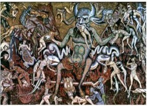

So, given the glaring inconsistencies, anachronisms, evidence of tampering, etc., what then would induce otherwise intelligent people to believe steadfastly, or at least profess to believe, in the infallibility of these doctrines? There are numerous reasons to do so, some nobler than others. There is a considerable degree of overlap between them.
Here are the reasons gathered and categorized so far, given alphabetically:
Ambition: Armed with a few quotes from the Apostle Paul, a person can speak with authority and climb as high as her temerity will allow. Wrapped in the cloak of righteousness, she can attack all enemies with impunity and then, when attacked in return, hide behind the crucifix. Now she can go out and impose “God’s Word” on the larger sphere. She now has a host of new powers to impose on the world, perhaps to shame and intimidate, perhaps to self-righteously condemn, perhaps to take an authoritative role in a discussion or decision, perhaps to feel superior through comfort or “spiritual” advice; always aiming at a position of control “in the name of God.” We all know well enough to what horrific ends these powers will reach if unchecked: burning “heretics” alive, etc. A church, no matter how small, is often the arena for personality struggles between its members, for whom faith is an opportunity to exert dominance. When a religious establishment dominates a town, it becomes the rostrum for social ascension.
Authority: How dare I doubt when great and learned men and women before have expressed firm belief? What right have I to doubt their authority? What do I know that they didn’t? They can’t all be wrong, can they? When both parents and other authoritative figures in society insist upon the truth of a certain belief, who has the gumption to question it? Lack of intellectual confidence goes a long way to explain this impulse. Then, when children discover inconsistencies in their religion, they are merely told that it’s a “mystery” and they must accept it on “faith.””Blessed are those that have not seen, yet still believe.”
Class struggle: Both Christianity and Buddhism prospered initially because they appealed to a large underclass with little hope of social advancement under the pre-Christian/pre-Buddhist social hierarchy. Churches offer them a glimpse of equality and self-importance.
Comfort in distress through resignation to God’s Will - In The Brothers Karamazov, as the Elder Zosima attempts to comfort the woman whose children have all died, he goes through the usual laundry list of pious explanations: your child is in Heaven now looking down on us; God is testing your faith; etc. The best consolation for the bereaved is the belief that they are in a better place and that we’ll see them again if we submit to the church.
Community: A powerful carrot and a stick. Members support each other emotionally and economically to keep the community as a whole alive. I know of many people who depend on church associations for their livelihood. If they were to question doctrine, they would endanger the economic viability of their way of life. Is it worth it, just to exercise your “freedom of thought” to call down upon you and your family the rage of the community that feeds you? Religious communities also offer safety in numbers. The need to belong is basic in human beings: a need satisfied by the military, sports teams, schools, gangs, and churches. This is especially true in smaller “religious” towns, where everyone knows who the doubter is among them. Shunning is thus a potent tool to keep people on the straight and narrow, whether they really believe the doctrine or not. Mob psychology is an effective form of enforcing unity. The primal fear of isolation or dying alone is also soothed by church communities. Persecution also tightens community bonds and portrays the doubter as a treasonous coward.
Confusion: People who feel overwhelmed and disoriented by life can get soothing, authoritative, narcotizing answers to dilemmas such as global warming, overpopulation, nuclear proliferation, death of children, social injustice, and terrorism.
Diffidence: People who fear being seen as prideful, or who actually have low self-esteem, can find strength within themselves to go beyond their self-imposed limitations, and can ascribe that strength not to their puny egos, but to a “higher power.” In so doing, they can parade their talents, but only so long as all credit is given to this higher power, so as to shield them from seeming proud (which they are). This externalization of praise and blame empowers people to commit acts of greater courage or of greater cruelty than they thought possible, while under the sway of the “spirit.” Ironically, the more intelligent a person is, the less confidence one has in her own judgment. Thus do many geniuses fall prey to theological nonsense.
Escapism: Sometimes, the reaction to an unsatisfying life is to escape to the imaginary, narcotizing True World of religion - the apocalypse, the afterlife - or back to a glorious past (that never existed) associated with "old time religion" (meaning Catholicism?) Encouraged by “faith,” one can deny the realities of an inconvenient world, expunge guilt, and overcome shame.

Family harmony: “Our mother would turn over inher grave, if she knew that you had left the church!” Deviating from the family’s religion entails friction and risk. Finally breaking with the superstitions supported by a family for generations requires great courage and confidence. Yet even then, the knowledge that certain family members - especially the older or less sophisticated folks respected and beloved from childhood - will feel heart-broken or betrayed is a significant incentive to postpone or cancel one’s “selfish, prideful” free-thinking.
Fear: There are manifold fears associated with religion: fear of isolation from friends and family, fear of revenge of the “faithful,” fear of Hell (there isn’t really one, right?), fear of the pointlessness of life if you are right that we are just random emanations of energy hurtling through space, fear of dying alone. Religion overcomes fear by embracing it (bolstered by the guarantee of an afterlife not merely of physical security, but of permanent ecstasy). Religion harnesses and makes sense out of primal fears: the Absurd here corresponds to Nietzsche’s Dionysian impulse; the Individual Unconscious acts as an eddy in the Collective, individuated by trauma: hence the irresistible allure of Hitler, ISIS, Trump, religion. To this category belong superstitions of various forms: seeking security in a frightening world, fear of an afterlife, Then there’s the Existential fear that life is pointless, in answer to which theologians have devised True World theories and championed the Ascetic Ideal. In these thought- experiments, the True World (Heaven) is what matters - this world is a nuisance; the purpose of life is to gain entry into Heaven. This solution solves the need for purpose in life and panders to people’s need for self-esteem, while making their salvation the central concern of all creation (It really is all about me!).
Feminism: The Cult of Domesticity conceded to women the field of spirituality, and from the earliest days of the church, women played important roles that allowed them a channel to vent their frustrations with paternalistic society. Church is sometimes the only venue for women to express themselves, pseudo-St. Paul notwithstanding.
Financial Enrichment: A decent living can be made by offering a range of religious services. I still recall Reverend Ike on the radio as I drove across South Carolina in the 1970’s. “For a double portion gift, you get a double portion blessing!” Evangelism is the last refuge for those who couldn’t make a living selling shoes.
Game Theory: Believing entails less risk than not believing because if there are a Heaven and Hell, I’m better off covering my bets by believing, while if there are no such places, I lose nothing.
Goodness booster shot: Some persons go to church for the inspiration to be a better person, and it seems to work: church-goers generally tend to try to be nicer people.
Guilt: One of the most despicable psychological methods used to coerce people into church is to project upon them, from earliest youth, guilt for actions that supposedly happened long ago. The first thing these “loving parents” do is to burden the minds of their trusting children with the idea that they are sinful, utterly depraved, and deserve damnation, and God knows every thought you have! The Catholic Church is especially skilled at this one, having a sacrament whereby all you need to do is tell the priest every sinful action or unclean thought you have ever had, then you’re magically forgiven and the sins disappear from your soul! Another angle on guilt is the progression:
“The church educated you; your good religious parents raised you; the church community supported you to go to that damned college where you learned to betray the trust of everyone who should matter in your life. You’re just on an ego trip! You arrogant ass, how you love to sneer at the beliefs of good, kind people that crave comfort in their hour of need! What do you have to offer in the place of our ‘superstition’? Science?!”
Hope: In times of desperation and loneliness, people need hope. Militant Islam has arisen at this time because the once-proud kingdoms of the Middle East have been effectively castrated for the last two hundred years. Religion becomes an integral part of individual identity. Submission (like a frontal lobotomy) is the path to happiness. Righteousness becomes the armor and weaponry of social outcasts. Those whose lives suck, who have been disappointed in love or career, can find acceptance, consolation, and power. This is an especially effective lure to those without hope of improvement of their lot - the chronically poor, the outcasts, druggies, the defeated. The promise of a better life in the next world to those who bear their fate in obedience to God (the church) is balm to their hurt minds. Conversely, former addicts often cite religion as the key to their rehabilitation. Half-way houses run by churches often actually help people get back on their feet.
Immortality: The idea of death is abhorrent to many, so they gravitate to a belief system that satisfies their egotism.
 Indoctrination: “Why do you believe that?” “Because the church says so. There is nothing you or anyone can say that will ever shake my faith!” “Ok, but faith in what?” “I believe whatever the church says I should believe!” The church is the font of religious Truth, and like the Communist Party, cannot err. Pope Pius IX said so! From earliest childhood children are indoctrinated to accept absurdities as truths, and any wavering or questioning is treated as heresy.
Inertia: Many of the less thoughtful among us believe out of mere laziness.
Intellectual curiosity: People cannot accept that we are nothing more than random emanations of cosmic energy. Their egos demand that we are more central to the plan, that we are the purpose of the entirety of creation.
Intellectual insecurity: People who were never very intelligent find an easy way to take the moral high ground and stand up to the smarty-pants secular humanists. Likewise, persons cognizant of their own intellectual limitations are easily convinced to swallow church doctrine hook, line, and sinker.
Justice: Those who can't let injustice have the last laugh, who refuse to accept that bad things happen to good people, and that bad people aren’t punished for what they have done, must believe that there is someone keeping score who will dispense justice to the good and evil.
Justification: Religion is a potent weapon to justify almost any crime against humanity. Slavery was justified by religious leaders quoting the bible, as are wars, both defensive and offensive, opportunistic attacks upon one’s social or economic rivals, and the burning of people at the stake, pogroms, and lynchings - all performed by church-going Christians.
Loneliness, especially the desire for reunion with loved ones who have died. A local Jehovah’s Witness used to come by from time to time to try to convert me. When I let slip that my mother had died when I was four years old, she immediately went to work on that. The next time she showed up, she had a brochure that showed how I would be reunited with my mother in Heaven, if I joined her group. Here the religious organization plays the dangerous role of quack psychiatrist to people who have suffered emotional trauma, and always with the same prescription: “Complete unquestioning faith in our organization will solve all your problems. Just have faith in (what we tell you about) Jesus.” Conversely, churches also offer a place a stranger can go and have immediate acceptance, a place where she can feel she belongs. The fellowship churches offer also relieves the fear that one will die alone and forgotten. Seeing friendly, supportive faces once a week is very comforting.
Masochism: Children who are tricked by their loving parents into believing that the dark shadow of original sin hangs over them, and that the body is inherently “sinful,” not to mention that God knows their every thought (worse than 1984), must be burdened with abundant guilt. Add to that the hidden terror of someone who has actually done something wrong, or whom the doctrine classifies as sexually deviant, and it is understandable that many look to religion for a purifying punishment which they know they deserve; hence they welcome punishment and practice asceticism, self-flagellation, etc.
Morality: Many believe that morals are the proper province of religion rather than philosophy, and that Judeo-Christian morals are superior. Morality is taught in churches, so people associate the church with morality, and morality with social order; thus have churches co-opted social mores and claimed a monopoly on goodness, yet too often fail to speak out against the immorality of the flock - hence the acquiescence to slavery from 1619 on, the emergence of the “Southern” (no blacks allowed) Methodist church in 1844, the anti-working class “Acres of Diamonds” gospel of the 1880’s, and the hateful, xenophobic movements against Jews, Catholics, the Irish, Germans, Chinese, gays, and Muslims.
Mystical Union: People who want to experience the eternal, unchanging seminal power of the universe beyond the reach of reason use various means - meditation, incantations, prayer, a life of selfless service, etc. Churches sometimes offer such paths, but seldom without a load of superstitious nonsense.
Need for explanations: Personal experience of the “supernatural” (dreams, lightning on a sunny day, etc.) requires some explanation, and science cannot answer every question, yet. Hence, every unexplained phenomenon becomes a “proof” of the existence of some deity.
Nostalgia: Religion manipulates images of happiness, victory, justice, and order, as well as the hope of meeting long lost family members or friends in the next life.
Philanthropy: For some folks, the doctrine is not as important as the opportunity to serve the needy. In answer to Jesus’ call to clothe the naked, and feed the hungry, like Chaucer’s “pauvre Persoun,” they flock to churches, synagogues, mosques, and temples to help out those in need.
Philosophical exchange: Some folks like to exchange inspirational ideas with others of generally the same mind, thereby achieving an intellectual high.
Physical needs: From the beginning, people have turned to gods for basic security. “Give us food, rain, sun, etc.” “Let my child survive this plague.” “Protect our house from this tornado.” “Let our nation repel the invader.” When the seagulls arrive or a child recovers, or the tornado passes them by, or the invader is defeated, it is proof of the efficacy of worship/prayer. What’s interesting are the mental gymnastics exhibited when such help is not forthcoming. The most successful religions have been through cycles of depression and defeat, and have a number of ready rationalizations for failure of divine salvation. Classified under the title of Theodicy, these justifications include such time-worn excuses for the failure of God to protect “his people” as: “We have sinned and are being punished” (often with side-long glances at the presumed guilty party), or “We are being tested,” or “God works in ways beyond our comprehension.” And when an innocent baby dies - “She was guilty of original sin,” or “You’ll see her again in Heaven,” or, strangest of all, “God punishes those whom he loves.” Supplied with these defense mechanisms, a religion may deflect blame for failing its most basic task and may survive, though diminished, although no one yet can explain where God was during the Holocaust. And when even that doesn't account for God’s failures, then cynics turn to apocalypticism, “We live in an evil age, but fear not, the end is near at hand!”
Political Action: Not only was the abolition movement born out of Great Awakening evangelism, but the temperance and civil rights movements as well. Liberation Theology of the 1960’s mobilized many religious people to take direct political action.
Political organization: The church is often a positive political agent in a community, as were the black churches during the civil rights movement.
Pragmatism: Sometimes people join a religion in order to associate with the strongest social class or dominant element; likewise, for an oppressed group, religion is the focus of their strength and security in numbers; further, folks can get a job or find a spouse by joining a certain religious group. Sometimes the motive is to make friends or find a “safe” date.
Pride: People are unwilling to admit their error, especially after indoctrinating their own children. Hypocrisy, especially when widely shared, is easier than humiliation.
Reason for living: People are unwilling to believe that beyond self-gratification their lives are pointless. Faith is often contrasted to nihilism, wherein life serves no purpose.
Reason: a) I (or someone whose judgment I trust) witnessed a miracle (i.e., saw something I/she can’t explain), so there must be supernatural phenomena; therefore I will submit to the doctrine of the church!? b) There must be an after-life because I have seen dead people in my dreams. c) This universe cannot have been random. Humans are too subtle to have evolved from pond scum. It makes sense to have a creator-god. d) Scripture is so convincing in its detail and weighty thought (though that would also recommend the Mahabharata).
Ritual: The grand theater of High Mass with its majestic sights, sounds, and scents is intoxicating.
Sadism: Where there is so much desire for correction (see Masochism above), can they be far behind who will gladly dispense the punishment ascribed by Heaven? The Bible unfortunately lends itself readily to perverted abuse by parents, spouses, preachers, and others who feel themselves qualified to express God’s wrath at human failing. This punishment can be physical or, more dangerously, emotional. Having heard the tearful confessions of a teenager who is a serial offender against God’s clear indictment against sexual promiscuity, what dutiful priest would be so remiss as not to whip the fear of God into any such errant youth (while also releasing his libidinal tension)?
Security: People feel reassured when swaddled in the faith of their fathers. In times of trouble, people long for the security of their infancy, when their believer-parents cradled them and taught them “As I lay me down to sleep…”
Sex with children (clergy only, please!): Catholic priests, possibly because they are forbidden to marry, repeatedly run afoul of social norms in their exuberance to ram the fear of God into young boys and girls. Additionally, ages-long suppression of homosexuals has led naturally to the gravitation of persons so inclined to the priesthood, where they can live out their fantasies while protected by the Church. Mormon preachers are also allowed to express their love of God on underage girls completely legally, sometimes even with the coercive encouragement of the child’s parents. Leaders of cults also often find this particular perk irresistible.
Stubbornness (~Pride above): Though they recognize the rational and psychological superiority of the opposing argument, some people are simply unwilling to give their (obviously demonic) adversary the satisfaction.
Survival (~Community above): Persecuted religious minorities identify with their religion and believe they must stick together to survive.
Vanity: The church becomes “my team” and maybe even has a flag, to which one can feel a form of “patriotism.”
These reasons are potent by themselves, but when used in combination, they are nearly insurmountable for an adult, much less a child.
~~~~~~~
Indoctrination: “Why do you believe that?” “Because the church says so. There is nothing you or anyone can say that will ever shake my faith!” “Ok, but faith in what?” “I believe whatever the church says I should believe!” The church is the font of religious Truth, and like the Communist Party, cannot err. Pope Pius IX said so! From earliest childhood children are indoctrinated to accept absurdities as truths, and any wavering or questioning is treated as heresy.
Inertia: Many of the less thoughtful among us believe out of mere laziness.
Intellectual curiosity: People cannot accept that we are nothing more than random emanations of cosmic energy. Their egos demand that we are more central to the plan, that we are the purpose of the entirety of creation.
Intellectual insecurity: People who were never very intelligent find an easy way to take the moral high ground and stand up to the smarty-pants secular humanists. Likewise, persons cognizant of their own intellectual limitations are easily convinced to swallow church doctrine hook, line, and sinker.
Justice: Those who can't let injustice have the last laugh, who refuse to accept that bad things happen to good people, and that bad people aren’t punished for what they have done, must believe that there is someone keeping score who will dispense justice to the good and evil.
Justification: Religion is a potent weapon to justify almost any crime against humanity. Slavery was justified by religious leaders quoting the bible, as are wars, both defensive and offensive, opportunistic attacks upon one’s social or economic rivals, and the burning of people at the stake, pogroms, and lynchings - all performed by church-going Christians.
Loneliness, especially the desire for reunion with loved ones who have died. A local Jehovah’s Witness used to come by from time to time to try to convert me. When I let slip that my mother had died when I was four years old, she immediately went to work on that. The next time she showed up, she had a brochure that showed how I would be reunited with my mother in Heaven, if I joined her group. Here the religious organization plays the dangerous role of quack psychiatrist to people who have suffered emotional trauma, and always with the same prescription: “Complete unquestioning faith in our organization will solve all your problems. Just have faith in (what we tell you about) Jesus.” Conversely, churches also offer a place a stranger can go and have immediate acceptance, a place where she can feel she belongs. The fellowship churches offer also relieves the fear that one will die alone and forgotten. Seeing friendly, supportive faces once a week is very comforting.
Masochism: Children who are tricked by their loving parents into believing that the dark shadow of original sin hangs over them, and that the body is inherently “sinful,” not to mention that God knows their every thought (worse than 1984), must be burdened with abundant guilt. Add to that the hidden terror of someone who has actually done something wrong, or whom the doctrine classifies as sexually deviant, and it is understandable that many look to religion for a purifying punishment which they know they deserve; hence they welcome punishment and practice asceticism, self-flagellation, etc.
Morality: Many believe that morals are the proper province of religion rather than philosophy, and that Judeo-Christian morals are superior. Morality is taught in churches, so people associate the church with morality, and morality with social order; thus have churches co-opted social mores and claimed a monopoly on goodness, yet too often fail to speak out against the immorality of the flock - hence the acquiescence to slavery from 1619 on, the emergence of the “Southern” (no blacks allowed) Methodist church in 1844, the anti-working class “Acres of Diamonds” gospel of the 1880’s, and the hateful, xenophobic movements against Jews, Catholics, the Irish, Germans, Chinese, gays, and Muslims.
Mystical Union: People who want to experience the eternal, unchanging seminal power of the universe beyond the reach of reason use various means - meditation, incantations, prayer, a life of selfless service, etc. Churches sometimes offer such paths, but seldom without a load of superstitious nonsense.
Need for explanations: Personal experience of the “supernatural” (dreams, lightning on a sunny day, etc.) requires some explanation, and science cannot answer every question, yet. Hence, every unexplained phenomenon becomes a “proof” of the existence of some deity.
Nostalgia: Religion manipulates images of happiness, victory, justice, and order, as well as the hope of meeting long lost family members or friends in the next life.
Philanthropy: For some folks, the doctrine is not as important as the opportunity to serve the needy. In answer to Jesus’ call to clothe the naked, and feed the hungry, like Chaucer’s “pauvre Persoun,” they flock to churches, synagogues, mosques, and temples to help out those in need.
Philosophical exchange: Some folks like to exchange inspirational ideas with others of generally the same mind, thereby achieving an intellectual high.
Physical needs: From the beginning, people have turned to gods for basic security. “Give us food, rain, sun, etc.” “Let my child survive this plague.” “Protect our house from this tornado.” “Let our nation repel the invader.” When the seagulls arrive or a child recovers, or the tornado passes them by, or the invader is defeated, it is proof of the efficacy of worship/prayer. What’s interesting are the mental gymnastics exhibited when such help is not forthcoming. The most successful religions have been through cycles of depression and defeat, and have a number of ready rationalizations for failure of divine salvation. Classified under the title of Theodicy, these justifications include such time-worn excuses for the failure of God to protect “his people” as: “We have sinned and are being punished” (often with side-long glances at the presumed guilty party), or “We are being tested,” or “God works in ways beyond our comprehension.” And when an innocent baby dies - “She was guilty of original sin,” or “You’ll see her again in Heaven,” or, strangest of all, “God punishes those whom he loves.” Supplied with these defense mechanisms, a religion may deflect blame for failing its most basic task and may survive, though diminished, although no one yet can explain where God was during the Holocaust. And when even that doesn't account for God’s failures, then cynics turn to apocalypticism, “We live in an evil age, but fear not, the end is near at hand!”
Political Action: Not only was the abolition movement born out of Great Awakening evangelism, but the temperance and civil rights movements as well. Liberation Theology of the 1960’s mobilized many religious people to take direct political action.
Political organization: The church is often a positive political agent in a community, as were the black churches during the civil rights movement.
Pragmatism: Sometimes people join a religion in order to associate with the strongest social class or dominant element; likewise, for an oppressed group, religion is the focus of their strength and security in numbers; further, folks can get a job or find a spouse by joining a certain religious group. Sometimes the motive is to make friends or find a “safe” date.
Pride: People are unwilling to admit their error, especially after indoctrinating their own children. Hypocrisy, especially when widely shared, is easier than humiliation.
Reason for living: People are unwilling to believe that beyond self-gratification their lives are pointless. Faith is often contrasted to nihilism, wherein life serves no purpose.
Reason: a) I (or someone whose judgment I trust) witnessed a miracle (i.e., saw something I/she can’t explain), so there must be supernatural phenomena; therefore I will submit to the doctrine of the church!? b) There must be an after-life because I have seen dead people in my dreams. c) This universe cannot have been random. Humans are too subtle to have evolved from pond scum. It makes sense to have a creator-god. d) Scripture is so convincing in its detail and weighty thought (though that would also recommend the Mahabharata).
Ritual: The grand theater of High Mass with its majestic sights, sounds, and scents is intoxicating.
Sadism: Where there is so much desire for correction (see Masochism above), can they be far behind who will gladly dispense the punishment ascribed by Heaven? The Bible unfortunately lends itself readily to perverted abuse by parents, spouses, preachers, and others who feel themselves qualified to express God’s wrath at human failing. This punishment can be physical or, more dangerously, emotional. Having heard the tearful confessions of a teenager who is a serial offender against God’s clear indictment against sexual promiscuity, what dutiful priest would be so remiss as not to whip the fear of God into any such errant youth (while also releasing his libidinal tension)?
Security: People feel reassured when swaddled in the faith of their fathers. In times of trouble, people long for the security of their infancy, when their believer-parents cradled them and taught them “As I lay me down to sleep…”
Sex with children (clergy only, please!): Catholic priests, possibly because they are forbidden to marry, repeatedly run afoul of social norms in their exuberance to ram the fear of God into young boys and girls. Additionally, ages-long suppression of homosexuals has led naturally to the gravitation of persons so inclined to the priesthood, where they can live out their fantasies while protected by the Church. Mormon preachers are also allowed to express their love of God on underage girls completely legally, sometimes even with the coercive encouragement of the child’s parents. Leaders of cults also often find this particular perk irresistible.
Stubbornness (~Pride above): Though they recognize the rational and psychological superiority of the opposing argument, some people are simply unwilling to give their (obviously demonic) adversary the satisfaction.
Survival (~Community above): Persecuted religious minorities identify with their religion and believe they must stick together to survive.
Vanity: The church becomes “my team” and maybe even has a flag, to which one can feel a form of “patriotism.”
These reasons are potent by themselves, but when used in combination, they are nearly insurmountable for an adult, much less a child.
~~~~~~~